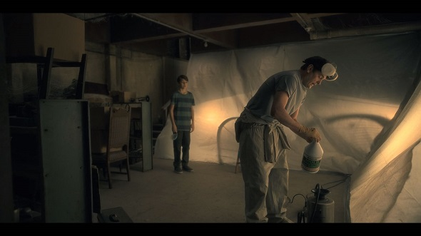

A necessidade da casa em deixar cada morador se sentindo isolado, mesmo rodeado de gente, é explicado no quarto com a porta vermelha, onde todos acreditavam que aquele Quarto Vermelho seria o coração da casa, e todos ficavam loucos pra saber o que haveria lá dentro; o que é revelado por Nell que explica pra eles que aquele ali na verdade não é o coração da casa, mas sim o estômago, dizendo o seguinte: “Aqui, eu sou como uma criatura pequenina engolida inteira por um monstro, e o monstro sente os mínimos movimentos dentro de mim”. Ou seja, a Casa conseguiu prender cada membro da família por muito tempo como se fossem pequenas criaturas, usando uma abordagem diferente com cada um.
Para Olivia, o Quarto Vermelho assume o formato de uma sala de leitura

Steve, é uma sala de jogos;

Shirley, é uma sala de estar com álbuns de família;

Theo, é uma sala de dança;

Luke, é uma casa na árvore

Nell é uma sala de brinquedos.

O único que a gente nunca viu no Quarto Vermelho, ou pelo menos, achamos que nunca vimos, é o pai da família. Durante a estadia na casa, vemos o Hugh tentando entrar no quarto. Isso porque ele quer proteger a família de algo que tem uma representação muito importante: o Mofo nas paredes da casa.
A Casa consegue ler a personalidade do Hugh, assim como de todos os outros membros da família, e sabe que a abordagem com ele tem que ser feita de forma diferente. E ela sabe também que aquela família não está planejando ficar naquela casa pra sempre. Que assim que eles acabarem aquelas reformas, eles planejam ir embora dali. E a Casa precisa que eles fiquem ali por muito tempo, porque ela precisa que cada um deles gaste tempo dentro do Quarto Vermelho, para que ela possa digerir cada um deles lentamente. Então, ela coloca ali pro pai da família, um problema que vai atrasar infinitamente os planos dele de reformar aquela casa rápido e ir embora dali, que é o Mofo Negro apodrecendo as paredes.
Após analisar as plantas da casa, Hugh acredita que a fonte de água que está causando aquele mofo está vindo do terceiro andar, e como ele já vasculhou a casa inteira e não encontrou nada, ele se convence de que O Mofo tá vindo de dentro do Quarto Vermelho. E é aí que ele tenta usar a força bruta, e cada vez mais tenta entrar lá dentro. Enquanto ele ficava completamente distraído do que tava acontecendo ao redor dele, focado em eliminar esse mofo, ele não se deu conta de que a família dele já estava lá dentro do Quarto Vermelho.
Cada membro da família, já estava isoladamente sendo digerido pelo quarto, e sendo contaminado pelo mofo. E quando o pai finalmente consegue acordar pra vida e perceber o que tá acontecendo, já era tarde demais, e ele perdeu a sua esposa por completo para a Casa. Mas por mais que a Olivia esteja “perdida”, já completamente dominada por aquela entidade, o Hugh consegue salvar os filhos.

Ou pelo menos ele acha que consegue salvar. Porque a questão sobre o Quarto Vermelho é que enquanto você fica dentro dele, ele também entra dentro de você. E aí cada um dos filhos continua “contaminado por aquele mofo” pelo resto da vida deles.
Quando toda a família se reúne na Residência Hill uma última vez no final, o Hugh tem uma conversa com o fantasma da Olivia, onde ele diz pra ela que é como se ele tivesse passado todos os últimos anos segurando a porta do quarto pra evitar que o mofo, ou seja, o segredo, os traumas, o passado saísse de lá e atingisse os filhos. Sem se dar conta de que tudo isso já tinha saído de lá e já estava dentro dos meninos.
É aqui que o casal se dá conta de que o que destruiu a família não foi a Depressão da mãe.Foi a falta de diálogo entre todos da família. Aquela Casa miserável soube muito bem como manter cada um isolado num Quarto Vermelho especial, criando em todos os membros da família a noção de que o Refúgio Seguro de cada um deles, era buscando um lugar onde eles estivessem sozinhos.
A Casa conseguia sugar a energia daquelas pessoas de tal forma, que ela já consegue assombrar eles com cenas da vida deles que ainda nem mesmo tinham acontecido, usando imagens tristes do futuro de cada um pra fazer com que eles sentissem medo de coisas que ainda nem tinham vivido.
Da mesma forma que a série conta a história da família pra gente de forma não linear, mesclando o passado, o presente e o futuro, a própria Nell no final explica que a nossa vida precisa ser enxergada dessa forma. Não como uma série de acontecimentos em ordem linear, mas sim como uma chuva de acontecimentos, onde tudo o que você viveu no seu passado, as escolhas que você está fazendo no presente, e as consequências que você vai ter no futuro, está tudo interligado, como se acontecesse ao mesmo tempo. A Casa tentava assombrar eles com essa ideia de que, os traumas não resolvidos que eles tinham agora na infância, iam causar tragédias na vida deles no futuro.
Residência Hill queria mostrar para todos, mas principalmente para Olivia, que aquela ali era a Casa Ideal para a família Crain.
Com o Luke, por exemplo, que era tão desacreditado pela própria família, onde todo mundo sempre dizia pra ele que ele tava imaginando coisas, que ele tinha que crescer e parar de ter amigos imaginários, ou de imaginar fantasmas; o próprio Luke então já era atormentado com a ideia de que, no futuro, o fato dele ter aprendido quando criança que ele não podia confiar na família pra contar sobre essas visões de fantasmas que atormentam a mente dele, iam fazer com que ele buscasse um escape da sua mente, de outra forma, se tornando um viciado em drogas. Então o menino começa a ter pesadelos onde ele diz que tá injetando veneno no próprio corpo dele
Nell sendo atormentada desde criança pela visão de como ela mesma vai morrer.
E mais uma vez para Liv, de que não existe escapatória, de que a cena do futuro do Luke sofrendo uma overdose e morrendo, já está acontecendo, como se fosse um destino do qual é impossível ela escapar